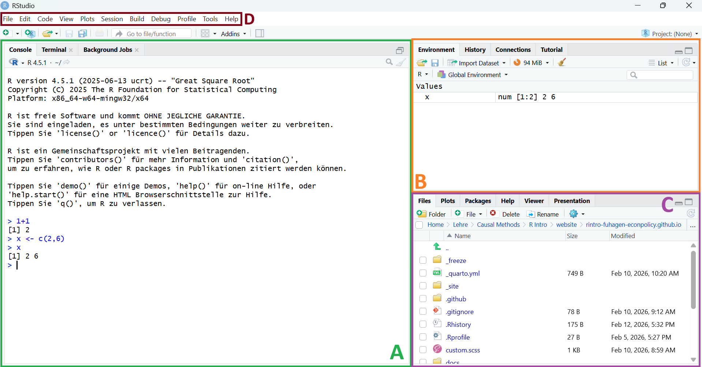

1 Erste Schritte in R
1.1 Installation
Für die Teilnahme an diesem Kurs müssen zwei Programme auf dem Computer installiert sein: R und RStudio. R stellt die eigentliche Programmiersprache bereit, während RStudio als integrierte Entwicklungsumgebung (IDE) dient. Zwar lässt sich R auch ohne RStudio nutzen, die Arbeit in RStudio ist jedoch deutlich komfortabler und übersichtlicher.
Sollte man bereits Erfahrung mit dem Programmieren haben und regelmäßig mit verschiedenen Sprachen arbeiten, könnten alternativ auch andere IDEs interessant sein, die den Wechsel zwischen Sprachen erleichtern. Beispiele hierfür sind Visual Studio Code oder Positron.
1.1.1 R installieren
- Rufe die Website https://cran.r-project.org/ auf
- Wähle dein Betriebssystem (Windows, Mac, Linux)
- Lade die neueste Version herunter
- Starte die Installation und folge den Anweisungen
R wird regelmäßig weiterentwickelt und erhält häufig Updates. Daher sollte die installierte Version gelegentlich aktualisiert werden. Insbesondere größere Versionssprünge können etwas aufwendiger sein, da bereits installierte Packages anschließend erneut installiert werden müssen. Detaillierte Hinweise zum Aktualisieren von R stellt der Helpdesk der FernUniversität Hagen hier zur Verfügung.
1.1.2 RStudio installieren
- Rufe die Website https://posit.co/download/rstudio-desktop/ auf
- Lade RStudio Desktop (kostenlose Version) herunter
- Starte die Installation und folge den Anweisungen
Sobald eine neue Version von RStudio verfügbar ist, erscheint beim Start des Programms ein entsprechender Hinweis. Die Aktualisierung kann direkt durchgeführt werden, indem man den angezeigten Schritten folgst.
WarnungWichtig!
Installiere zuerst R und danach RStudio, da RStudio auf eine vorhandene R-Installation angewiesen ist.
1.2 Das RStudio-Interface
Öffnen wir nun RStudio. Das Interface besteht dabei aus den folgenden Elementen (siehe Abbildung 1.1):
-
Konsole (A): Hier können wir unseren Code ausführen und der korrespondierende Output wird angezeigt. In diesem Beispiel wurde etwa 1+1 addiert sowie der Vektor
xdefiniert und angezeigt. -
Environment (B): Zeigt gespeicherte Objekte. Hier findet sich der in der Konsole definierte Vektor
xwieder. - Files/Plot/Help (C): Hier finden wir unter anderem einen Databrowser (Files), deine erstellten Grafiken (Plots) und die Hilfefunktion (Help)
- Menüleiste (D)
1.3 Erste Befehle
1.3.1 R als Taschenrechner
Lass uns als erstes R als Taschenrechner verwenden, um die Handhabung der Konsole kennenzulernen. Um R als Taschenrechner zu nutzen, geben wir einfach die gewünschte Operation ein und drückst die Entertaste, um den Code auszuführen. Der Befehl (auch Prompt genannt) wird in der Konsole angeführt. Das Ergebnis der Operation wird in der nächsten Zeile angeführt. Beispielsweise kann man in R Zahlen addieren, potenzieren oder logarithmieren:
10 + 4
#> [1] 14
2^3
#> [1] 8
log(4)
#> [1] 1.386294
HinweisHinweis
Um ganze Codeblöcke in diesem Kurs kopieren zu können, wird der Output in den Blöcken auskommentiert und folgt einem #>. In der eigenen Konsole wird der Output ohne #> angezeigt. Die Addition sieht in der Konsole nach der Befehlausführung etwa so aus:
> 10 + 4
[1] 141.3.2 Kommentare
Um später nachvollziehen zu können, was in unserem Code passiert, können wir Kommentare in deinem Code hinterlassen. Kommentare beginnen mit # und werden von R ignoriert:
# Division
10 / 5 # Kommentare können auch am Ende einer Zeile stehen
#> [1] 21.3.3 Objekte erstellen
Um Daten zu speichern, zu organisieren und wiederzuverwenden können diese in R als Objekt gespeichert werden. In R speichern wir Werte in Objekten mit dem Zuweisungsoperator <-. Die Zuweisungslogik folgt dabei immer der Form objekt_name <- element:
number <- 3Mit c() können wir mehrere Elemente zu einem Objekt hinzufügen, wobei die einzelne Elemente mit einem Komma getrennt werden:
numbers <- c(1, 2, 3, 4, 5)Die beiden Objekte werden nun im Environment (Panel B in Abbildung 1.1) angeführt. Beim definieren eines Objekts wird dieses nicht automatisch in der Konsole angezeigt. Um uns das Objekt zahlen anzusehen, können wir einfach den Objektnamen in der Konsole eingeben und den Befehl ausführen:
numbers
#> [1] 1 2 3 4 5
TippObjektnamen
Objektnamen müssen mit einem Buchstaben beginnen. Erlaubte Zeichen sind Buchstaben, Ziffern, Unterstriche (_) und Punkte (.). Vermeide Umlaute und andere Sonderzeichen. Objekte sollten aussagekräftig sein und einer gleichbleibenden Namensgebungslogik folgen. Eine weitverbreitete Namensgebungslogik ist snake_case, wobei einzelne Worte in Kleinbuchstaben mit Unterstrichen getrennt werden, z.b. age_students oder income_students. Damit Objektnamen nicht allzu lang werden, verwenden wir Abkürzungen, die auch später nachvollziehbar bleiben, etwa age_std oder inc_std.
Objekte können überschrieben werden, in dem ein oder mehrere Elemente demselben Objektnamen überwiesen werden:
numbers <- c(6, 7, 8, 9, 10)
WarnungFehler bei Objektadressierung
Um Objekte zu addressieren, muss dieses ohne Fehler aufgerufen werden. Tippfehler oder unvollständige Objektnamen führen zu Error-Meldungen. R ist dabei case-sensitiv:
numers
#> Fehler: Objekt 'numers' nicht gefunden
Numbers
#> Fehler: Objekt 'Numbers' nicht gefunden